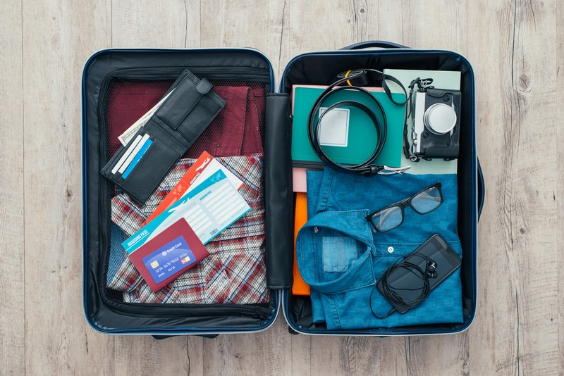

Ireland Travel Guide
by Vlad Klenov 2020 ©
1. Ireland is very safe country
Ireland on the 10th place in the list of the safest countries, while Great Britain on 41th. You have to follow simple rules, like don’t go out later than 11pm or don’t approach drunk people. 97% of tourist say that they feel a high level of safety.
2. Currency in Ireland
Euro. Euro has been the currency in Ireland since 2002. So if you travel through Europe and all your money in euros you don’t need to worry.
3. Packing the essentials / weather

Ireland is cold country, so you have to pack warm clothes. In June, temperature doesn’t rise above 20°C. You must take an umbrella with you because half a year there is a rain.
4. The needed documents
Russian people must get a visa. If you want to go to Northern Ireland, you must get an Irish visa, but if you want to visit South Ireland, you must get an English visa.
5. Food
There are a lot of castles in Ireland, only in Dublin there are 13 castles. Most famous castle is the castle of Dublin. It was founded in 1204 by John Lackland. Until 1922 it was the main fort of England, after became owned by the government of Ireland.
6. Interesting places
There are a lot of castles in Ireland, only in Dublin there are 13 castles. Most famous castle is the castle of Dublin. It was founded in 1204 by John Lackland. Until 1922 it was the main fort of England, after became owned by the government of Ireland.
7. Transport
Transport system in Ireland is developed. There are comfortable busses, which are usually double-decker. Trains are also convenient, but are divided into classes: first and second. There is no metro in Ireland.
8. About medicine in Ireland
Medicine in Ireland is developed, but there are problems even now. For example, every citizen of Ireland can have a free medical care, but you must have medicine card. Only elderly and poor have it. If you don’t have medicine card you have to pay a lot.